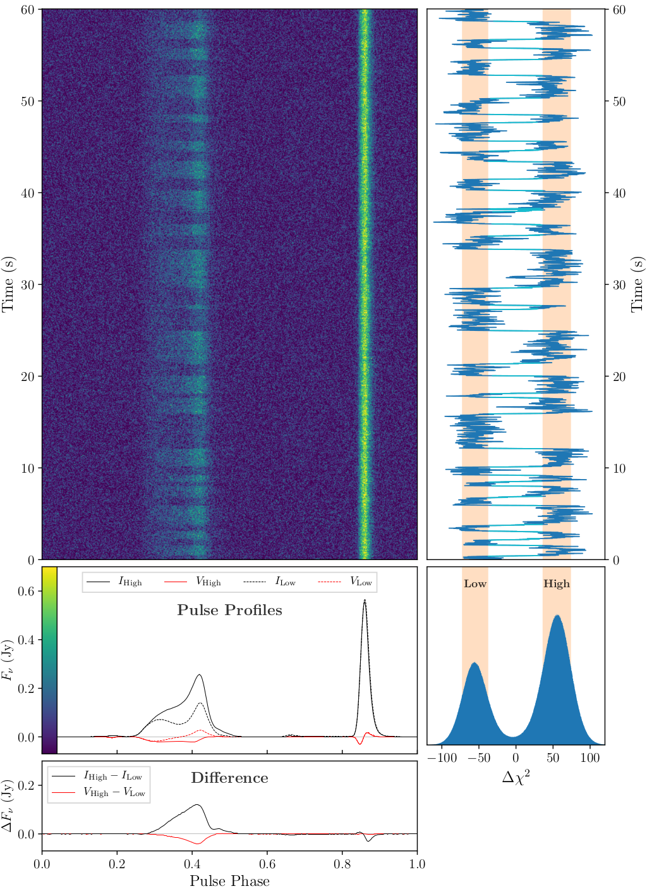

Entry 22¶
Mode changing in the Black Widow Pulsar¶
Nikhil Mahajan
We made a first discovery of mode changing behavior in a millisecond pulsar, a rapidly rotating magnetized neutron star. Mode changing is a phenomenon where a pulsar’s emission switches between two quasi-stable modes. Until now, mode changing had only been observed in a few regular pulsars (spin periods of about 1 second), but not in millisecond pulsars (which have spin periods on the order of 1 millisecond). In our observations of the Black Widow Pulsar, we detect the radio emission switching between two modes, which we call the “Low Mode” and the “High Mode”.
In this plot, the top-left panel shows the pulse profile (pulsar’s emission over a single rotation period) for a 60-second chunk of data, and the profile can be seen switching between the two modes. In the middle-left and bottom-left panels, we plot the average emission profiles of the pulsar for the two different modes in total intensity (I) and circular polarization (V), and the difference between the two modes. The color-bar for the top-left panel is displayed on the left edge of the middle-left panel as they share the axis. On the top-right, we plot the difference in chi-squared statistics when fitting the individual profiles to the two modes corresponding to the 60-second chunk of data plotted on the left. This is effectively a “metric” for determining which mode an individual pulse belongs to. The light blue segments mark transitions between the two modes. On the bottom-right is a histogram of this metric for our entire dataset clearly showing two peaks for the two modes.
In the Black Widow Pulsar, the two modes differ in both intensity and polarization, and affect multiple emission components across the profile indicating that this is a complex and global phenomenon in the magnetosphere. Previous detections of mode changing in slow pulsars exhibited mode changing timescales of minutes to weeks whereas this pulsar exhibits a more rapid mode changing timescale of ~1 second. This could place constraints on possible mechanisms that could cause mode changing. The nature and mechanism of radio emission in pulsars is poorly understood. This discovery of mode changing in a millisecond pulsar brings us closer to understanding what goes on in the magnetosphere of a pulsar. Is this is a special pulsar or do other millisecond pulsars exhibit mode changing as well? Are there other emission phenomena associates with mode changing? The nature and mechanism of radio emission is poorly understood. This discovery pushes us towards a coherent theory of radio emission from pulsars.